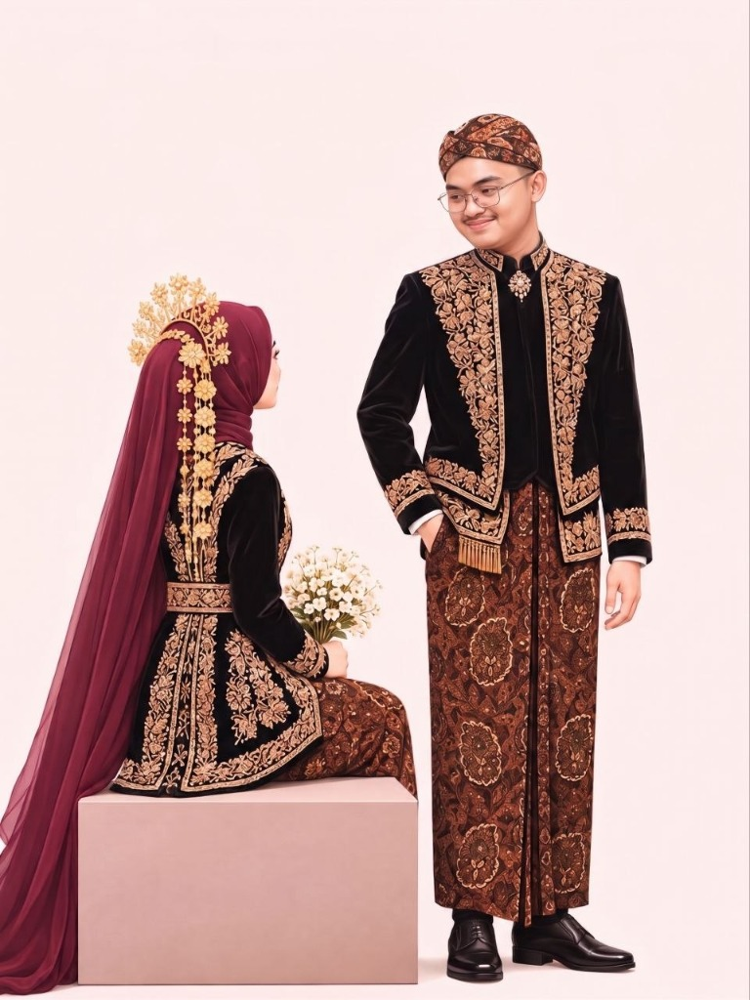

بِسْمِ اللَّهِ الرَّحْمَنِ الرَّحِيمِ
Dengan nama Allah Yang Maha Pemurah lagi Maha Penyayang
Majlis Kesyukuran Perkahwinan
Dr. Alimin & Erna
Dewan SJK (C) Kung Ming, Tawau, Sabah
السَّلاَمُ عَلَيْكُمْ وَرَحْمَةُ اللهِ وَبَرَكَاتُهُ
Assalamualaikum Warahmatullahi Wabarakatuh
Tuan Haji Alias bin Ali
&
Puan Hajah Sitti Komariyah binti Arshad
Dengan penuh rasa kesyukuran ke hadrat Allah SWT, kami sekeluarga dengan segala hormatnya menjemput Yang Berbahagia Tan Sri / Puan Sri / Dato’ / Datin / Tuan / Puan / Encik / Cik serta seisi keluarga ke Majlis Kesyukuran Perkahwinan putera kami yang dikasihi:

Putera Kami
Alimin bin Alias
Dr. Alimin
Erna Hafizah Erpian
Erna
Puteri kepada Encik Erpian bin Haji Ibrahim dan Puan Fatmahwati binti Abbas
Turut Mengundang
Keluarga Besar Sebelah Pengantin Lelaki
Datuk dan Nenek yang Dikasihi
- Encik Arshad Mat Jasin
- Puan Sri Subiyaton Bijato
- Encik Isa Matta
Menghitung Hari
Butiran Majlis
- Tarikh
- Ahad, 14 Mac 2027
- Masa Majlis
- 10:00 Pagi – 5:00 Petang
- Ketibaan Tetamu
- Bermula 10:00 Pagi
- Tempat
- Dewan SJK (C) Kung Ming Taman Megah Jaya, Off Jalan Chong Thien Vun, 91007 Tawau, Sabah
Susunan Masa
Atur Cara Majlis
Panduan Arah
Lokasi Dewan
Dewan SJK (C) Kung Ming
Taman Megah Jaya, Off Jalan Chong Thien Vun
91007 Tawau, Sabah, Malaysia
4°15′32″N • 117°55′37″E
وَمِنْ آيَاتِهِ أَنْ خَلَقَ لَكُم مِّنْ أَنفُسِكُمْ أَزْوَاجًا لِّتَسْكُنُوا إِلَيْهَا وَجَعَلَ بَيْنَكُم مَّوَدَّةً وَرَحْمَةً
“Dan di antara tanda-tanda yang membuktikan kekuasaan-Nya dan rahmat-Nya, bahawa Dia menciptakan untuk kamu pasangan hidup daripada jenis kamu sendiri, supaya kamu bersenang hati dan hidup mesra dengannya, dan dijadikan-Nya di antara kamu perasaan kasih sayang dan belas kasihan.”
Surah Ar-Rum, Ayat 21
Ya Allah Ya Rahman Ya Rahim, berkatilah Majlis Kesyukuran Perkahwinan Dr. Alimin dan Erna. Satukanlah hati keduanya dalam ketaatan kepada-Mu, limpahkanlah sakinah, mawaddah dan rahmah dalam mahligai rumah tangga mereka, serta kekalkanlah kebahagiaan ini hingga ke syurga-Mu. Amin Ya Rabbal Alamin.
Doa Buat Mempelai
بَارَكَ اللَّهُ لَكَ وَبَارَكَ عَلَيْكَ وَجَمَعَ بَيْنَكُمَا فِي خَيْرٍ
Barakallahu laka wa baraka ‘alaika wa jama‘a bainakuma fii khair.
“Semoga Allah memberkati kamu, melimpahkan berkat ke atas kamu, dan menghimpunkan kamu berdua dalam kebaikan.”
Titipan Doa
Ucapan & Doa
Kesudian Tuan/Puan menitipkan ucapan tahniah dan doa restu buat kedua-dua mempelai amatlah kami hargai.